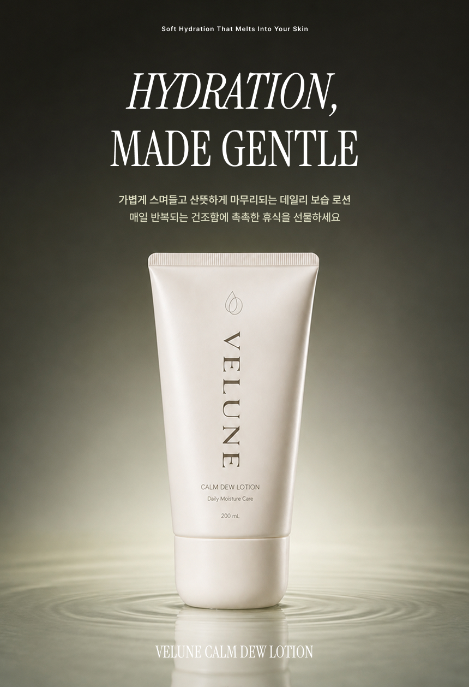
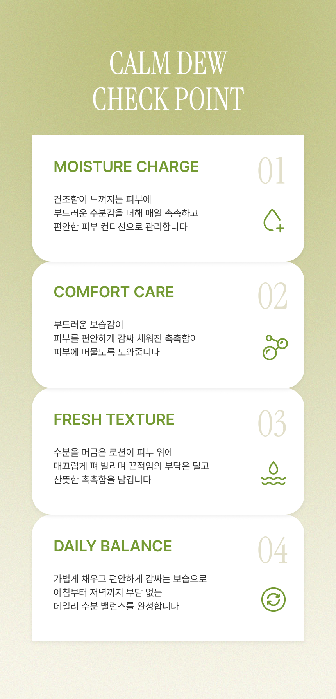
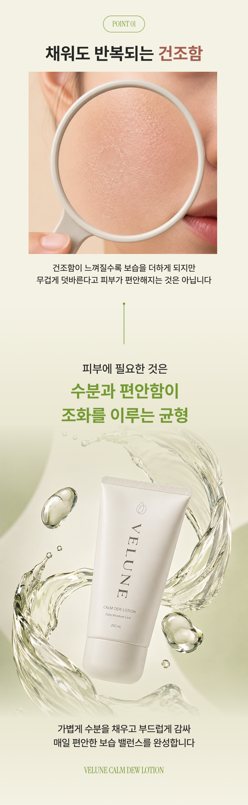
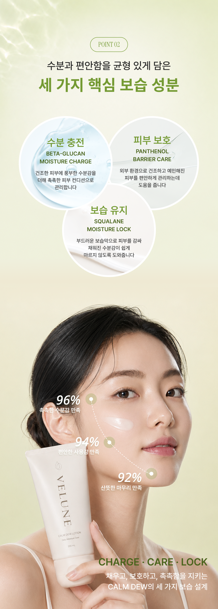
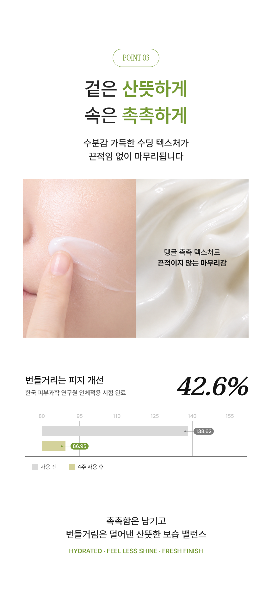
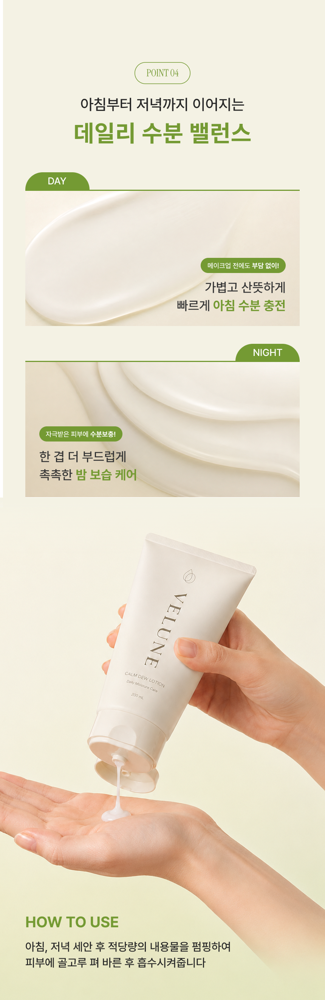
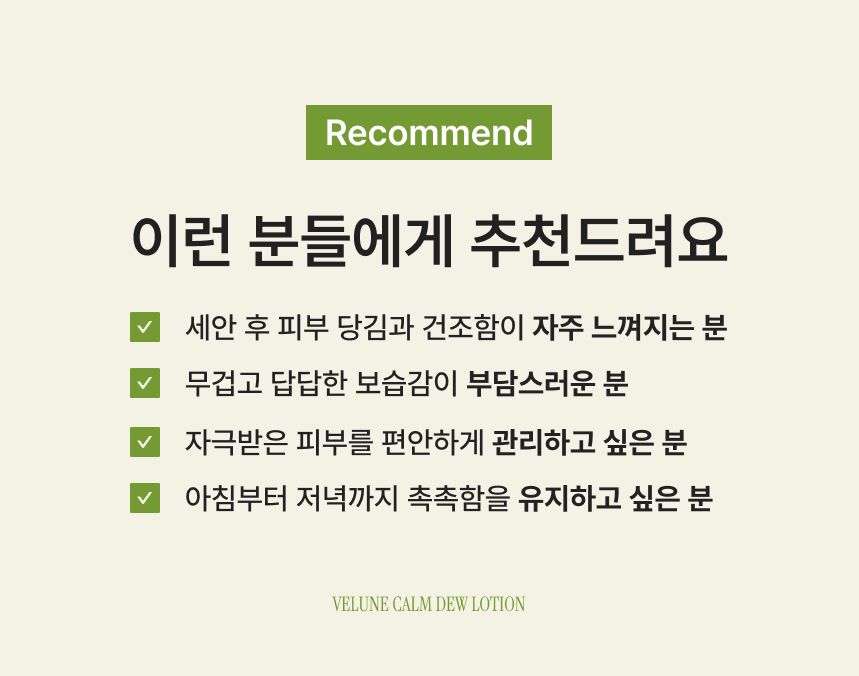

VELUNE
수분 충전부터 보습 유지까지 피부에 머무는 촉촉함을 표현한 로션 상세페이지
Design Point
-
01
프로젝트 개요 및 기획 의도
수분 충전과 편안한 보습을 동시에 제공하는 데일리 로션을 가상의 브랜드로 기획했습니다 피부에 부담 없이 매일 사용할 수 있다는 제품의 특징을 중심으로 촉촉하고 편안한 사용 경험을 전달하고자 했습니다
-
02
핵심 효능 중심의 정보 설계
수분 충전과 보습 유지, 피부 진정, 산뜻한 제형 등 주요 효능을 단계별로 구분했습니다 피부 표현과 제형 이미지, 핵심 수치를 함께 활용해 제품의 장점을 시각적으로 빠르게 이해할 수 있도록 구성했습니다
-
03
산뜻하고 편안한 그린 톤앤매너
라이트 그린을 중심으로 아이보리와 화이트를 조화롭게 사용해 산뜻하고 편안한 분위기를 표현했습니다 투명한 수분감과 부드러운 로션 제형이 돋보이는 이미지를 활용해 촉촉하면서도 가볍게 스며드는 제품의 특징을 강조했습니다






